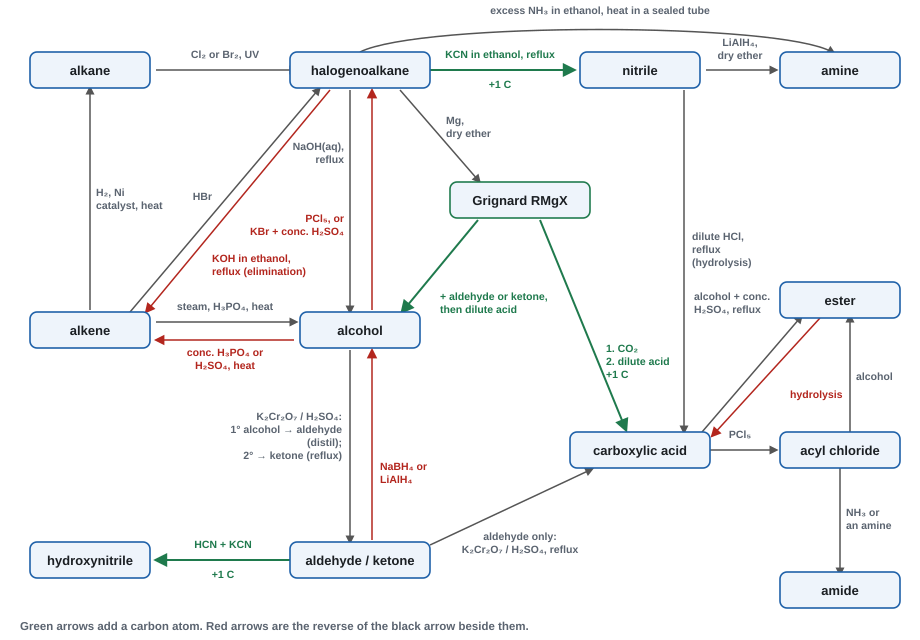
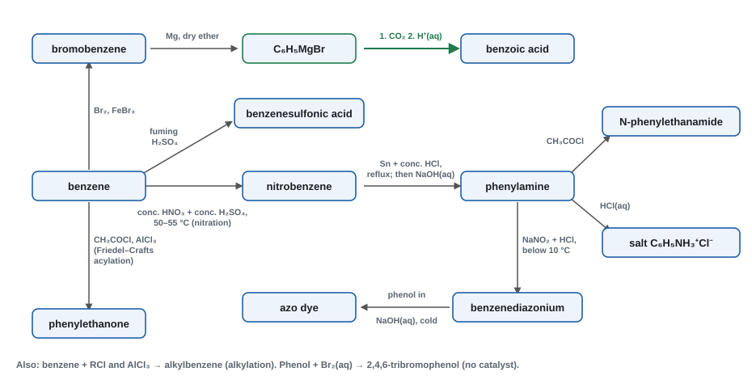
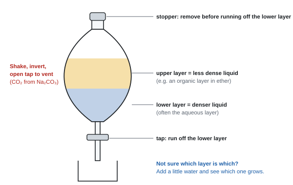

Organic synthesis
This topic pulls the organic chemistry of the course together. It shows how to deduce a structure from data, how to plan a route from one compound to another, how to lengthen a carbon chain with Grignard reagents, and the practical techniques used to make, separate, purify and identify an organic product safely.
Spec20.1Deducing formulae and structures from data
Deduce empirical, molecular and structural formulae from combustion analysis, percentage composition, functional-group tests, infrared spectra, mass spectra and ¹³C and ¹H NMR spectra.
A four-stage method
- Empirical formula from combustion data or percentage composition.
- Molecular formula from Mr (usually the M⁺ peak in the mass spectrum).
- Functional groups from chemical tests (19.12) and the IR spectrum.
- Full structure from the NMR spectra and mass-spectrum fragments. Check that your structure fits every piece of data.
Stage 1a: combustion analysis
A known mass of the compound (C, H and maybe O) is burned in excess oxygen. The CO₂ and H₂O are collected and weighed.
- mass of C = mass of CO₂ × 12 ÷ 44
- mass of H = mass of H₂O × 2 ÷ 18 (each H₂O contains two H atoms)
- mass of O = mass of sample − mass of C − mass of H (by difference)
- Then convert each mass to moles and find the simplest whole-number ratio.
0.290 g of a compound of C, H and O burns completely to give 0.660 g of CO2 and 0.270 g of H2O. Find its empirical formula.
Carbon: moles of CO2 = 0.660 ÷ 44.0 = 0.0150 mol, so 0.0150 mol of C, mass 0.180 g.
Hydrogen: moles of H2O = 0.270 ÷ 18.0 = 0.0150 mol, so 2 × 0.0150 = 0.0300 mol of H, mass 0.030 g.
Oxygen by difference: 0.290 − 0.180 − 0.030 = 0.080 g, so 0.080 ÷ 16.0 = 0.0050 mol.
Ratio C : H : O = 0.0150 : 0.0300 : 0.0050 = 3 : 6 : 1, so the empirical formula is C3H6O. If the mass spectrum shows M+ at 58, this is also the molecular formula: propanone or propanal, which IR, NMR or chemical tests can tell apart.
Worked example: combustion analysis
1.44 g of compound Q (C, H and O only) burns completely to give 3.52 g of CO₂ and 1.44 g of H₂O.
Mass of C = 3.52 × 12 ÷ 44 = 0.960 g. Mass of H = 1.44 × 2 ÷ 18 = 0.160 g.
Mass of O = 1.44 − 0.960 − 0.160 = 0.320 g.
Moles: C = 0.960 ÷ 12 = 0.0800; H = 0.160 ÷ 1 = 0.160; O = 0.320 ÷ 16 = 0.0200.
Divide by the smallest (0.0200): C 4, H 8, O 1. Empirical formula C₄H₈O (Mr 72).
The molecular ion is at m/z 72, so the molecular formula is also C₄H₈O.
Stage 1b: percentage composition
Worked example: from percentages
A compound contains 40.0% C, 6.7% H and 53.3% O by mass, and its Mr is 60.
Moles in 100 g: C 40.0 ÷ 12 = 3.33; H 6.7 ÷ 1 = 6.7; O 53.3 ÷ 16 = 3.33.
Ratio 1 : 2 : 1, so the empirical formula is CH₂O (Mr 30).
60 ÷ 30 = 2, so the molecular formula is C₂H₄O₂ (e.g. ethanoic acid or methyl methanoate).
Stage 3: infrared spectrum
Look up wavenumbers in the Data Booklet and quote a value within its range. The ones used most:
| Bond | Wavenumber / cm⁻¹ | Notes |
|---|---|---|
| O–H (alcohol, phenol) | 3750–3200 | broad if hydrogen-bonded |
| O–H (carboxylic acid) | 3300–2500 | very broad |
| N–H (amine) | 3500–3300 | |
| C–H (aldehyde) | 2900–2820 and 2775–2700 | two weak peaks |
| C≡N (nitrile) | 2260–2215 | |
| C=O (ester) | 1750–1735 | |
| C=O (aldehyde) | 1740–1720 | |
| C=O (ketone) | 1720–1700 | aryl ketone 1700–1680 |
| C=O (carboxylic acid) | 1725–1700 | |
| C=C (alkene) | 1669–1645 | |
| C=C (arene ring) | about 1600, 1580, 1500, 1450 |
Stage 4: mass spectrum
- The molecular ion peak M⁺ (the last major peak) gives the Mr.
- Fragments show pieces of the structure. Write them with a + charge: m/z 15 CH₃⁺, 29 C₂H₅⁺ (or CHO⁺), 43 CH₃CO⁺ (or C₃H₇⁺), 57 C₂H₅CO⁺, 77 C₆H₅⁺.
- Chlorine has isotopes ³⁵Cl : ³⁷Cl = 3 : 1. One Cl gives peaks at M and M+2 in a 3 : 1 ratio; two Cl give M, M+2 and M+4 in a 9 : 6 : 1 ratio.
- A small M+1 peak comes from molecules containing one ¹³C atom.
Stage 4: NMR spectra
¹³C NMR: the number of peaks = the number of different carbon environments. Look for symmetry: in 1,4-disubstituted benzene the ring has fewer environments than in the 1,2- or 1,3-isomers.
¹H NMR gives three kinds of information:
| Feature | Tells you |
|---|---|
| number of peaks | number of different H environments |
| chemical shift δ / ppm | the type of environment (use the Data Booklet). Roughly: alkyl 0.8–1.5; H–C next to C=O 2.0–2.8; H–C–O 3.3–4.3; arene H 6.5–8.0; aldehyde H 9–10; COOH 10–12 |
| relative peak area (integration) | the ratio of H atoms in each environment |
| splitting | n + 1 rule: a peak is split into (n + 1) lines by n H atoms on the neighbouring carbon(s). Singlet = 0 neighbours, doublet = 1, triplet = 2, quartet = 3 |
- An O–H (or N–H) proton usually gives a singlet: it neither splits nor is split.
- Equivalent H atoms don't split each other.
Worked example: putting the evidence together
Q is C₄H₈O (from the combustion example above).
- Tests: an orange precipitate with 2,4-DNPH (C=O); no silver mirror with Tollens' reagent (not an aldehyde), so it is a ketone. A yellow precipitate with iodine and NaOH shows CH₃CO–.
- IR: strong peak at 1715 cm⁻¹ (ketone C=O); no broad O–H.
- Mass spectrum: M⁺ at 72; fragments at 43 (CH₃CO⁺) and 57 (CH₃CH₂CO⁺).
- ¹³C NMR: 4 peaks, so 4 carbon environments.
- ¹H NMR: three peaks, areas 3 : 2 : 3. A singlet at 2.1 ppm (CH₃ next to C=O, no H neighbours); a quartet at 2.4 ppm (CH₂, 3 H neighbours); a triplet at 1.0 ppm (CH₃, 2 H neighbours).
- Structure: CH₃COCH₂CH₃, butanone.
- Combustion: "mass of C = 4.95 × (12 ÷ 44)", "mass of H = 0.90 × (2 ÷ 18)", "mass of O by difference", then moles and ratio. A correct answer with working scores all marks (WCH15 Oct 2025, Jun 2022).
- Rounding moles: "carbons per molecule = 95.6 ÷ 24 = 3.98, so 4" (WCH15 Jun 2024).
- ¹H NMR: "4 peaks means 4 (different) hydrogen environments"; "peak at 7.5 ppm is due to H on the benzene ring"; quartet "3 H on the neighbouring carbon"; singlet "no H on neighbouring carbon"; "area 5 for the ring shows C₆H₅" (WCH15 Jan 2022).
- "The OH proton neither splits nor causes splitting" (WCH15 Jan 2021). Unusual wording such as "two splits" is accepted if clear.
- Chemical shifts and IR: "allow a single value or a range within the Data Booklet range". A value outside the range scores 0.
- Fragments need the + charge ("penalise omission of the positive charge"); a radical instead of an ion is wrong.
- Isotopes: "two atoms of chlorine, so a 9 : 6 : 1 ratio"; M+1 "due to one ¹³C atom" (WCH15 Jun 2024).
Often asked as: empirical formula from combustion data (most series); a 6–7 mark "deduce the structure" from combined data; count ¹³C environments; assign ¹H NMR peaks with splitting; identify fragment ions.
Taking the moles of H₂O as the moles of H. That halves the hydrogen (Jun 2022 report: the commonest error).
Using trial and error instead of the systematic C, H, O route (Jan 2022 report).
Suggesting N-containing groups for a compound with no N in its formula.
Counting the C=O carbon as a proton environment, or counting both halves of a symmetrical molecule as different (Jan 2021, Oct 2024 reports).
Quoting IR or ¹³C data when the question asked about ¹H NMR (Oct 2021 report).
Writing "³⁶Cl" or "³⁵·⁵Cl" (Jun 2024 report).
- Inverse calculation: percentage composition from a given formula, and values in ppm or ppb (WCH15 Oct 2022).
- Gas chromatography and GC–MS: components separate by retention time (how strongly each is attracted to the stationary phase), then each goes into the mass spectrometer (WCH15 Jun 2025).
- Empirical formula from a skeletal formula (about a third of candidates managed it in WCH15 Oct 2024). Count every carbon and hydrogen carefully.
Spec20.2Lengthening the carbon chain: Grignard reagents
Understand how to lengthen a carbon chain by using magnesium to make Grignard reagents, and how these react with carbon dioxide and with carbonyl compounds in dry ether.
Making a Grignard reagent
CH₃CH₂Br + Mg → CH₃CH₂MgBr (ethylmagnesium bromide)
- Reagents and conditions: a halogenoalkane (or halogenoarene, e.g. bromobenzene) with magnesium turnings, in dry ether (ethoxyethane), warmed gently under reflux.
- Why dry? Grignard reagents react with water at once, giving an alkane: CH₃CH₂MgBr + H₂O → CH₃CH₃ + Mg(OH)Br. All apparatus and reagents must be anhydrous.
- The C–Mg bond is polar with the carbon δ− (Mg is much less electronegative). So the carbon acts as a nucleophile: it attacks δ+ carbon atoms and forms a new C–C bond.
Reactions (two stages each: add, then dilute acid)
- The Grignard reagent adds to the δ+ carbon of C=O (CO₂, an aldehyde or a ketone) in dry ether.
- Dilute acid (e.g. dilute HCl or H₂SO₄) is added to hydrolyse the magnesium salt and release the product.
| Grignard reacts with | Product (after dilute acid) | Example with CH₃CH₂MgBr |
|---|---|---|
| carbon dioxide (dry ice) | carboxylic acid, one C longer | propanoic acid, CH₃CH₂COOH |
| methanal | primary alcohol | propan-1-ol, CH₃CH₂CH₂OH |
| any other aldehyde | secondary alcohol | with ethanal: butan-2-ol, CH₃CH₂CH(OH)CH₃ |
| a ketone | tertiary alcohol | with propanone: 2-methylbutan-2-ol, CH₃CH₂C(OH)(CH₃)₂ |
Equations, e.g.:
- CH₃CH₂MgBr + CO₂ → CH₃CH₂COOMgBr, then CH₃CH₂COOMgBr + H⁺ → CH₃CH₂COOH + Mg²⁺ + Br⁻
- CH₃CH₂MgBr + CH₃CHO → CH₃CH₂CH(CH₃)OMgBr, then + H₂O → CH₃CH₂CH(OH)CH₃ + Mg(OH)Br
Planning a Grignard route (working backwards)
- Find the carbon carrying the OH (or the COOH carbon).
- That carbon was the C=O carbon (or the CO₂ carbon) of the starting carbonyl.
- One of the groups attached to it came from the Grignard reagent. Split the molecule there.
Worked example: making 2-methylbutan-2-ol, (CH₃)₂C(OH)CH₂CH₃
The OH carbon has two CH₃ groups and one CH₂CH₃ group, so it is a tertiary alcohol: make it from a ketone.
Route 1: CH₃CH₂MgBr + propanone (CH₃COCH₃), then dilute acid.
Route 2: CH₃MgBr + butanone (CH₃COCH₂CH₃), then dilute acid.
Each Grignard is made from the bromoalkane + Mg in dry ether.
Other ways to add carbon atoms
| Method | Reagents | Gives | Carbons added |
|---|---|---|---|
| Grignard + CO₂ | RMgX, then CO₂, then H⁺ | carboxylic acid | 1 |
| Grignard + carbonyl | RMgX + aldehyde or ketone, then H⁺ | alcohol | the R group |
| Cyanide + halogenoalkane | KCN in ethanol, reflux | nitrile (then acid or amine) | 1 |
| Cyanide + carbonyl | HCN + KCN | hydroxynitrile | 1 |
| Friedel–Crafts on an arene | RCl or RCOCl + AlCl₃ | alkyl- or acylbenzene | R or RCO |
- "magnesium (powder) and (dry) ether"; "structure of the Grignard reagent" CH₃CH₂MgBr (CH₃CH₂BrMg is not accepted); "reaction with CO₂" then "hydrolysis with dilute acid / H⁺". CO₂ and acid can be two labelled parts of one arrow.
- Missing "dry" ether is penalised (WCH15 Jan 2024).
- Grignard + methanal → primary alcohol; + other aldehyde → secondary; + ketone → tertiary; + CO₂ → carboxylic acid (WCH15 Oct 2020 MCQ). The Grignard acts as a nucleophile (WCH15 Jun 2024 MCQ).
- Dehydrating a Grignard alcohol product: "concentrated phosphoric acid or concentrated sulfuric acid" (or alumina) (WCH15 Jan 2021).
Often asked as: a 5–7 mark synthesis route using a Grignard step (benzene → benzoic acid, WCH15 Jan 2022; alcohol → acid one carbon longer, WCH15 Jan 2025); which Grignard and carbonyl give a named alcohol (MCQ).
Forgetting dry ether, or merging CO₂ and the acid hydrolysis into one step with no acid (Jan 2025 report).
Making the Grignard from a compound that still has an –OH group: the OH would destroy it (Oct 2024 report).
Wrong number of carbons. Count before and after every step.
Putting Br on the ring as well as Mg in the aryl Grignard. It is C₆H₅MgBr: the Mg goes between the ring carbon and the Br (Jan 2022 report).
Grignard reagents and LiAlH₄ both react with water, which is why both need dry conditions (WCH15 Jan 2025 report). Choosing between a Grignard route and a cyanide route to the same acid is also examined (WCH15 Jun 2022).
Spec20.3Problem solving in organic chemistry
Use the organic chemistry in the specification to: (i) predict the properties of unfamiliar compounds with one or more known functional groups; (ii) plan reaction schemes of up to four steps; (iii) choose suitable practical procedures; (iv) choose control measures to reduce risk, using hazard data.
(i) Predicting properties of an unfamiliar compound
Find each functional group and apply its chemistry one at a time. Then check for things the groups do together (isomerism, polymers, hydrogen bonding).
Worked example: predicting the reactions of CH₂=CHCH₂CH(OH)COOH
The compound is 2-hydroxypent-4-enoic acid. Its groups: an alkene, a secondary alcohol and a carboxylic acid.
- Bromine water: decolourises (C=C addition), giving CH₂BrCHBrCH₂CH(OH)COOH.
- Na₂CO₃(aq): fizzing, CO₂ given off (COOH).
- PCl₅: steamy fumes of HCl (both OH and COOH react).
- Acidified K₂Cr₂O₇, warm: orange → green. The secondary alcohol is oxidised to a ketone.
- Iodine + NaOH: no yellow precipitate. There is no CH₃CH(OH)– or CH₃CO– group.
- Isomerism: C2 is chiral (H, OH, COOH and CH₂CH=CH₂), so it has optical isomers. No E/Z isomers: the end carbon of the C=C has two H atoms.
- Polymers: OH and COOH in one molecule, so it can form a polyester by condensation; the C=C allows addition polymerisation too.
- Solubility: soluble in water, because the OH and COOH groups hydrogen-bond with water.
(ii) Planning a synthesis (up to four steps)


Method
- Write out the start and the target. Compare the number of carbons and the functional groups.
- If the chain must get longer, you need a cyanide or Grignard step (or Friedel–Crafts on a ring). If it must get shorter by one, use the iodoform reaction (beyond the spec).
- Work backwards from the target: "what could I make this from?" Then work forwards from the start, and find where the two meet.
- For every step give the reagent(s), the conditions (heat/reflux, distil, catalyst, solvent, temperature) and the intermediate's structure.
Reagents and conditions: master table
| Change | Reagents and conditions |
|---|---|
| alkane → halogenoalkane | Cl₂ or Br₂, UV light |
| alkene → alkane | H₂, Ni catalyst, heat |
| alkene → halogenoalkane | HBr (or HCl), room temperature |
| alkene → dibromoalkane | Br₂, room temperature |
| alkene → alcohol | steam, H₃PO₄ catalyst, high temperature and pressure |
| halogenoalkane → alcohol | NaOH(aq) or KOH(aq), heat under reflux |
| halogenoalkane → alkene | KOH in ethanol, heat under reflux |
| halogenoalkane → nitrile | KCN in ethanol, heat under reflux (+1 C) |
| halogenoalkane → primary amine | excess NH₃ in ethanol, heat in a sealed tube |
| halogenoalkane → Grignard | Mg, dry ether |
| alcohol → chloroalkane | PCl₅, room temperature, dry |
| alcohol → bromoalkane | KBr + concentrated H₂SO₄ (makes HBr), heat |
| alcohol → alkene | concentrated H₃PO₄ or H₂SO₄, heat (or Al₂O₃) |
| 1° alcohol → aldehyde | K₂Cr₂O₇ + dilute H₂SO₄, warm, distil off the aldehyde as it forms |
| 1° alcohol → carboxylic acid | excess K₂Cr₂O₇ + dilute H₂SO₄, heat under reflux |
| 2° alcohol → ketone | K₂Cr₂O₇ + dilute H₂SO₄, heat under reflux |
| aldehyde or ketone → alcohol | NaBH₄ (in water or methanol), or LiAlH₄ in dry ether |
| aldehyde or ketone → hydroxynitrile | HCN + KCN (+1 C) |
| carboxylic acid → primary alcohol | LiAlH₄ in dry ether, then dilute acid |
| carboxylic acid → acyl chloride | PCl₅ (or SOCl₂), dry |
| acid + alcohol → ester | concentrated H₂SO₄ catalyst, heat under reflux |
| acyl chloride → ester / amide / acid | alcohol / NH₃ or amine / water, room temperature |
| ester → acid + alcohol | dilute acid, reflux (or NaOH(aq), reflux, gives the carboxylate) |
| nitrile → carboxylic acid | dilute HCl, heat under reflux |
| nitrile → primary amine | LiAlH₄ in dry ether |
| benzene → nitrobenzene | conc. HNO₃ + conc. H₂SO₄, 50–55 °C |
| nitrobenzene → phenylamine | Sn + conc. HCl, reflux; then NaOH(aq) |
| phenylamine → diazonium ion | NaNO₂ + HCl, below 10 °C |
Worked example: ethanol to propanoic acid (one more carbon)
Ethanol has 2 C and propanoic acid has 3 C, so a chain-lengthening step is needed.
Route A (cyanide):
- Ethanol → bromoethane: KBr + concentrated H₂SO₄, heat.
- Bromoethane → propanenitrile, CH₃CH₂CN: KCN in ethanol, heat under reflux.
- Propanenitrile → propanoic acid: dilute HCl, heat under reflux.
Route B (Grignard): steps 1 as above; then Mg in dry ether → CH₃CH₂MgBr; then CO₂, followed by dilute acid → CH₃CH₂COOH.
Worked example: benzene to N-phenylethanamide, with overall yield
- Benzene → nitrobenzene: conc. HNO₃ + conc. H₂SO₄, 50–55 °C. Yield 70%.
- Nitrobenzene → phenylamine: Sn + conc. HCl, reflux, then NaOH(aq). Yield 60%.
- Phenylamine → N-phenylethanamide (C₆H₅NHCOCH₃, Mr 135): ethanoyl chloride, room temperature. Yield 85%.
Overall yield = 0.70 × 0.60 × 0.85 = 0.357 = 35.7%. Multiply the decimal yields; never add them.
What volume of benzene (Mr 78, density 0.879 g cm⁻³) is needed for 5.00 g of product?
Moles of product = 5.00 ÷ 135 = 0.03704 mol.
Moles of benzene needed = 0.03704 ÷ 0.357 = 0.1037 mol. Divide by the yield: you need more than the theoretical amount.
Mass = 0.1037 × 78 = 8.09 g. Volume = 8.09 ÷ 0.879 = 9.21 cm³.
(iii) Choosing a procedure
| Situation | Procedure and why |
|---|---|
| slow reaction with volatile liquids | heat under reflux: heats for a long time without losing material |
| product must be removed as it forms (aldehyde from a 1° alcohol) | distil it off, so it isn't oxidised further |
| flammable solvent or reactant (ether, ethanol) | water bath or electric heating mantle, no naked flame |
| unstable intermediate (diazonium ion), exothermic nitration | ice bath; add reagents slowly |
| Grignard, LiAlH₄, AlCl₃, PCl₅, acyl chlorides | dry apparatus and reagents (react with water) |
| only one group should react | a selective reagent: H₂/Ni reduces C=C but not C=O; NaBH₄ reduces C=O but not C=C |
(iv) Hazards and control measures
| Hazard in the data | Control measure |
|---|---|
| flammable | no naked flames; heat with a water bath or electric heating mantle |
| toxic or harmful vapour, or a toxic gas formed (HCl, HCN, Br₂) | fume cupboard |
| corrosive (conc. acids, PCl₅, acyl chlorides, NaOH) | gloves and eye protection; add slowly |
| irritant | gloves, eye protection; avoid skin contact |
| carcinogen (benzene) | use a less harmful substitute (methylbenzene or methoxybenzene) if possible, or work in a fume cupboard with gloves |
| reacts violently with water | keep dry; add carefully, in small portions |
Control measures must match the hazard: "wear goggles" doesn't help with a flammable solvent.
Model 6-mark points: ethanoyl chloride v ethanoic anhydride for acylating phenylamine (WCH15 Jan 2024).
- Ethanoyl chloride gives HCl, a toxic, corrosive gas; the anhydride gives ethanoic acid, which is less hazardous (though flammable).
- Ethanoyl chloride reacts violently (with water too), so it is harder to control; the anhydride reacts more slowly.
- Use the hazard information the question gives for each reagent.
- Atom economy for making N-phenylethanamide (Mr 135):
- with ethanoyl chloride: 135 ÷ (93 + 78.5) × 100 = 78.7%
- with ethanoic anhydride: 135 ÷ (93 + 102) × 100 = 69.2%
- A higher atom economy means less waste: an advantage of the acyl chloride.
- Oxidation: "K₂Cr₂O₇ and H₂SO₄ / acidified dichromate"; aldehyde "with distillation" (reflux is not accepted for the aldehyde); acid "reflux". Missing H⁺, or HCl used for the acid, is penalised once (WCH15 Jan 2024, Oct 2024).
- Reduce only C=C: "H₂ and Ni / Pt". LiAlH₄ is not accepted, because it would reduce the ketone too (WCH15 Jan 2024, Oct 2024).
- Intermediates score even if a reagent is wrong. Give only one route: if you give two, the one scoring more marks is credited (WCH15 Jan 2024).
- Comparing two routes, any three: "number of steps", "purification required", "availability / cost of reagents", "toxicity of reagents / intermediates / by-products", "atom economy", "yield of each step", "side reactions". Unjustified "cost", "safety", "yield" or "rate" are ignored (WCH15 Jun 2024).
Often asked as: a 4–7 mark synthesis (almost every series); choose a selective reagent; a 6-mark hazards-and-atom-economy comparison; reverse yield calculations; pick a hazard symbol.
Not knowing where to start. Work backwards from the target (Oct 2020, Jun 2022 reports).
Leaving out the acid catalyst in esterification (Jun 2022 report: the commonest slip).
Adding cyanide to benzene as a first step: that reaction doesn't happen (Oct 2023 report).
Oxidising a primary alcohol under reflux when you need the aldehyde. Distil it off (Oct 2024 report).
Hazard answers that just say "safety" or "harmful", with no atom-economy numbers (Jan 2024 report). Show the molar masses.
Multiplying by the percentage yield in a reverse calculation. Divide (Jun 2022 report).
- Descending the series: the iodoform reaction (I₂ + NaOH) turns CH₃CO–R into RCOO⁻ + CHI₃, removing one carbon (WCH15 Jan 2021).
- Unfamiliar mechanisms given in the stem (radical steps with half-arrows, additions to C=O, catalytic cycles): follow the pattern shown and keep the arrows from bonds or lone pairs (WCH15 Oct 2021, Jan 2026).
- Industrial context: a factory route can't use some lab reagents (cost, hazard, scale), and more steps usually means a lower overall yield (WCH15 Jun 2025).
Spec20.4Core Practical 16: preparation of aspirin
Core Practical 16: prepare aspirin, and purify it.
The reaction
2-Hydroxybenzoic acid (salicylic acid) + ethanoic anhydride → 2-ethanoyloxybenzoic acid (aspirin) + ethanoic acid
HOC₆H₄COOH + (CH₃CO)₂O → CH₃COOC₆H₄COOH + CH₃COOH
- The phenol –OH group of salicylic acid is acylated, forming an ester. Phenols react only slowly with carboxylic acids, so a more reactive acid anhydride is used. An acid catalyst (a few drops of concentrated H₂SO₄ or 85% H₃PO₄) speeds it up.
- Aspirin contains an ester group, a carboxylic acid group and a benzene ring.
Core practical 16: method in brief
Preparation
- Weigh about 2–3 g of 2-hydroxybenzoic acid into a dry conical (or pear-shaped) flask. Record the exact mass.
- In a fume cupboard, add about 4–5 cm³ of ethanoic anhydride (in excess) and 5 drops of concentrated sulfuric or phosphoric acid.
- Warm in a water bath at about 60–80 °C for about 15–20 minutes, swirling, until the solid dissolves.
- Carefully add a little cold water to react with (hydrolyse) the excess ethanoic anhydride, then more cold water. Cool in an ice bath until crystals form.
- Collect the crude crystals by filtration under reduced pressure (Büchner funnel) and wash with a little ice-cold water.
Purification by recrystallisation
- Dissolve the crude product in the minimum volume of hot solvent (hot water, or a little hot ethanol then warm water).
- If there are insoluble bits, filter while hot.
- Let the solution cool slowly, then in ice, so that pure crystals form. Soluble impurities stay in solution.
- Filter under reduced pressure, wash with a little ice-cold water, and dry (between filter papers or in a desiccator). Weigh.
Purity check: measure the melting temperature. Pure aspirin melts sharply at about 135 °C; an impure sample melts lower and over a wider range.
Treating the results
Worked example: percentage yield and limiting reagent
3.00 g of 2-hydroxybenzoic acid (Mr 138) reacts with 4.00 cm³ of ethanoic anhydride (Mr 102, density 1.08 g cm⁻³). 2.85 g of pure aspirin (Mr 180) is obtained.
Moles of acid = 3.00 ÷ 138 = 0.02174 mol.
Mass of anhydride = 4.00 × 1.08 = 4.32 g; moles = 4.32 ÷ 102 = 0.04235 mol. Ratio 1 : 1, so the anhydride is in excess and 2-hydroxybenzoic acid is limiting.
Theoretical mass of aspirin = 0.02174 × 180 = 3.913 g.
Percentage yield = 2.85 ÷ 3.913 × 100 = 72.8%.
Worked example: atom economy
Atom economy = Mr of the desired product ÷ total Mr of all the reactants (from the balanced equation) × 100.
With ethanoic anhydride: 180 ÷ (138 + 102) × 100 = 75.0% (by-product ethanoic acid).
With ethanoyl chloride (by-product HCl): 180 ÷ (138 + 78.5) × 100 = 83.1%.
The anhydride is still chosen: it is cheaper, less violent, and doesn't give off corrosive HCl gas.
Why the yield is less than 100%
- Product is lost on transfer, and on the filter paper and glassware.
- Some aspirin stays dissolved in the solvent during recrystallisation and washing.
- The reaction may be incomplete, or some aspirin may be hydrolysed back to salicylic acid.
Sources of error and improvements
- Product still damp when weighed gives a mass that is too high. Dry it to constant mass.
- Too much recrystallisation solvent lowers the yield. Use the minimum volume of hot solvent.
- Washing with warm water dissolves product. Use ice-cold water, in small amounts.
- Equation: "salicylic acid + ethanoic anhydride → acetylsalicylic acid + ethanoic acid" (skeletal accepted; molecular formulae not) (WCH15 Oct 2023).
- % yield: 2.00 g salicylic acid (Mr 138) gives a theoretical 2.6087 g of aspirin (Mr 180); 1.9513 g obtained, so 74.8% (WCH15 Oct 2023).
- Recrystallisation: "dissolve in the minimum volume of hot solvent, filter (hot) to remove insoluble impurities, cool, and filter to collect crystals". Soluble impurities stay in the solution. The solvent must dissolve the product well when hot and poorly when cold (WCH15 Jan 2025, Oct 2022 MCQs).
- Melting-point bath: mineral oil, because water boils below aspirin's melting temperature. The likely impurity is unreacted 2-hydroxybenzoic acid (WCH15 Jun 2024 MCQs).
Often asked as: the equation, percentage yield, recrystallisation and melting-point MCQs, and a whole Section C on aspirin (WCH15 Oct 2023, 19 marks).
Using the anhydride (in excess) for the theoretical yield. Use the limiting reagent.
Using Mr values for the wrong compound. The Mr of aspirin is 180; salicylic acid is 138.
Forgetting ethanoic acid when balancing the equation (Oct 2023 report).
Naming 2-hydroxybenzoic acid wrongly: only a quarter of candidates got it (Oct 2023 report).
- Back titration for aspirin content: each aspirin uses 2 NaOH (one to neutralise the COOH, one to hydrolyse the ester) (WCH15 Oct 2023).
- A 0.330 g tablet is heated with 25.0 cm³ of 0.200 mol dm⁻³ NaOH (5.00 × 10⁻³ mol). The excess NaOH needs 16.70 cm³ of 0.100 mol dm⁻³ HCl (1.670 × 10⁻³ mol).
- NaOH used by aspirin = 5.00 × 10⁻³ − 1.670 × 10⁻³ = 3.330 × 10⁻³ mol. Aspirin = 3.330 × 10⁻³ ÷ 2 = 1.665 × 10⁻³ mol.
- Mass = 1.665 × 10⁻³ × 180 = 0.2997 g. Percentage of the tablet = 0.2997 ÷ 0.330 × 100 = 90.8%.
- Aspirin in the body: it is a weak acid, so in the acidic stomach (extra H⁺) its dissociation equilibrium shifts left, and in the alkaline small intestine (OH⁻ removes H⁺) it shifts right. Don't say Ka changes (WCH15 Oct 2023).
- Oil of wintergreen (methyl 2-hydroxybenzoate) is made from 2-hydroxybenzoic acid and methanol with an acid catalyst. In ¹H NMR, aspirin's COOH proton is at 10–12 ppm (WCH15 Oct 2023).
- Iron(III) chloride test: a purple colour shows unreacted phenol (salicylic acid) left in the product.
Spec20.5Techniques for preparing and purifying organic compounds
Understand these techniques: (i) refluxing; (ii) washing, including with water and sodium carbonate solution; (iii) solvent extraction; (iv) recrystallisation; (v) drying; (vi) distillation; (vii) steam distillation; (viii) melting temperature determination; (ix) boiling temperature determination.
(i) Heating under reflux
- A round-bottomed or pear-shaped flask with anti-bumping granules, and a vertical condenser with its top open. Water enters the condenser at the bottom and leaves at the top.
- Why: vapours condense and drip back, so the mixture can be heated for a long time without losing volatile reactants or products. This lets slow organic reactions go to completion.
- Heat with an electric heating mantle or water bath (flammable liquids). Never stopper the top: pressure would build up.
- Anti-bumping granules make the liquid boil smoothly, without large bubbles.
(ii) Washing
- The crude organic liquid is shaken with an aqueous solution in a separating funnel, and the layers are separated.
- Water removes water-soluble impurities (e.g. acids, salts, small alcohols).
- Sodium carbonate solution (or NaHCO₃) neutralises acidic impurities (e.g. HCl, H₂SO₄, carboxylic acid), turning them into water-soluble salts. CO₂ is given off, so invert the funnel and open the tap often to release the pressure.
- Sometimes a NaCl solution (brine) wash follows, to remove most of the water.

(iii) Solvent extraction
- Shake the aqueous mixture with an organic solvent that is immiscible with water (e.g. ethoxyethane or dichloromethane) and in which the product is much more soluble than in water. The product moves into the organic layer.
- Separate the layers. Use several small portions of solvent rather than one large portion: this extracts more product.
- Combine the organic layers, dry them (v), and remove the solvent by distillation.
- Adding salt to the water ("salting out") lowers the organic compound's solubility in water and helps it move into the organic layer (used for phenylamine, 19.5).
(iv) Recrystallisation (purifying a solid)
- Choose a solvent in which the product is very soluble when hot but only slightly soluble when cold.
- Dissolve the impure solid in the minimum volume of hot solvent, so the solution is saturated when hot.
- Filter hot (warmed funnel) to remove insoluble impurities.
- Cool slowly: the product crystallises. Soluble impurities are present in small amounts, so they stay in solution.
- Filter under reduced pressure (Büchner funnel), wash with a little ice-cold solvent, and dry.
Repeating recrystallisation gives a purer product but a lower yield.
(v) Drying
- Liquids: add an anhydrous drying agent such as anhydrous magnesium sulfate, calcium chloride or sodium sulfate. Swirl and add more until some powder moves freely and the liquid is clear, not cloudy. Then decant or filter off the solid.
- Solids: press between filter papers, leave in a desiccator, or warm in a low oven, well below the melting temperature.
(vi) Distillation
- Separates liquids by boiling temperature, or a volatile liquid from non-volatile substances.
- Thermometer bulb level with the side arm (measures the temperature of the vapour that is distilling). Condenser sloping down, water in at the lower end.
- Collect the fraction that distils within about 2 °C of the expected boiling temperature.
- Also used to remove a product as soon as it forms, e.g. an aldehyde from a primary alcohol, before it is oxidised further.
(vii) Steam distillation
- Steam is passed through the mixture (or it is boiled with water). A volatile compound that is immiscible with water distils over with the steam below 100 °C, well below its own boiling temperature.
- Why: the compound can be separated without heating it to its boiling temperature, where it might decompose. It also leaves behind non-volatile tars and inorganic salts.
- The distillate is cloudy: two layers of water and the compound. Separate them with a separating funnel or by solvent extraction.
- Used for phenylamine (from the tin/HCl mixture, 19.5) and to extract essential oils (e.g. lavender oil, limonene) from plants.
(viii) Melting temperature determination
- Pack a little dry, finely powdered solid into a capillary tube sealed at one end. Heat it in a melting-point apparatus or an oil bath (Thiele tube), slowly (about 1–2 °C per minute) near the melting temperature.
- Record the temperature range from first melting to completely liquid.
- Pure: melts sharply (over 1–2 °C) at the Data Book value. Impure: melts at a lower temperature, over a wider range.
(ix) Boiling temperature determination
- Distil the liquid (or heat it under reflux with a thermometer in the vapour). A pure liquid boils at a constant temperature that matches the Data Book value.
- Impurities make it boil over a range of temperatures. A dissolved non-volatile impurity raises the boiling temperature.
| Technique | Removes or does |
|---|---|
| reflux | heats for a long time without loss of volatile substances |
| washing with water | water-soluble impurities |
| washing with Na₂CO₃(aq) | acidic impurities |
| solvent extraction | moves product from water into an immiscible solvent |
| recrystallisation | purifies a solid (removes soluble and insoluble impurities) |
| drying agent | water from an organic liquid |
| distillation | separates by boiling temperature; collects a volatile product |
| steam distillation | separates a volatile, water-immiscible compound below 100 °C |
| melting / boiling temperature | checks identity and purity |
- Solvent extraction: "the two solvents are immiscible / two layers are formed" and "the solute is more soluble in the extracting solvent" (WCH15 Oct 2025).
- Distillation: "the aldehyde is distilled off to prevent its further oxidation" (not "the temperature is too high to reach") (WCH15 Oct 2022).
- Anti-bumping granules: "so the solvent boils smoothly" (WCH15 Oct 2022 MCQ).
- Washing with NaOH or Na₂CO₃: the acid is "converted to an (ionic) salt that is more soluble in water" because the "ions are solvated by water" (WCH15 Jun 2022).
- Recrystallisation: "insoluble impurities are removed by filtering the hot solution" (WCH15 Jan 2026 MCQ).
Often asked as: MCQs on each technique; "suggest why" a step is done; name the technique for purifying a solid product; choose and justify a heat source.
"Wash to remove impurities" without saying which: Na₂CO₃ removes acidic impurities.
Forgetting to vent the separating funnel when using carbonate.
Using lots of solvent in recrystallisation, or washing crystals with warm solvent: both dissolve product.
Stoppering the top of a reflux condenser.
Thinking an impurity raises the melting temperature. It lowers it and widens the range (Oct 2021 MCQ).
- Purity from data: a damp sample gives a mass too high and an apparent purity above the real value (WCH15 Oct 2024 MCQ; only a minority answered it correctly).
- Chromatography: Rf values from TLC or paper chromatography, and GC retention times, as purity checks (WCH15 Jan 2023, Jun 2025).
Quick checks
Which sequence converts bromoethane into propanoic acid?
Cyanide adds a carbon (CH3CH2CN), and acid hydrolysis turns the nitrile into CH3CH2COOH. NaOH then oxidation would give ethanoic acid, with only two carbons.
Which product forms when CH3MgI reacts with propanone and the mixture is then treated with water?
A Grignard reagent with a ketone gives a tertiary alcohol: the CH3 joins the carbonyl carbon, giving (CH3)3COH.
Why is a primary alcohol oxidised under reflux to make a carboxylic acid, but distilled to make an aldehyde?
The aldehyde has a lower boiling point than the alcohol and acid, so distillation carries it away before it meets more oxidising agent.
In recrystallisation, why is the minimum volume of hot solvent used?
With too much solvent, much of the product stays dissolved when cold and the yield falls, or no crystals form at all.
A student's crystals melt between 118 °C and 124 °C; the data book value is 127 °C. What does this suggest?
A pure substance melts sharply at its data book value. A low, broad melting range points to impurities, such as remaining solvent.
Which statement about hazard and risk is correct?
A hazard is the potential to cause harm; risk is the chance that harm actually happens, which falls with smaller amounts, lower concentrations and good control measures.